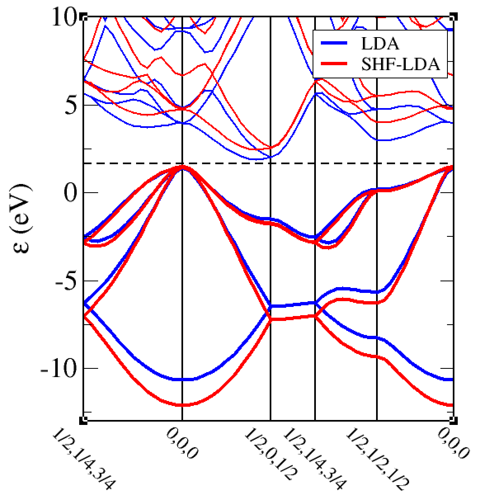

Controlling XC
The exchange and correlation functional used for calculations in Castep can be specified in one of two main ways.
-
There are a number of standard functionals that can be used in Castep with the xc_functional keyword:xc_functional
The most straightforward is with the .param file keywordxc_functional. For example to use the PBE functional in the .param file simply use
Local density approximation:
LDA
LDA-X
LDA-C
Generalised gradient approximations (GGA):
PW91
PBE
PBEsol
RPBE
WC
BLYP
B86PBE
PBE_X
PBE_C
PBEsol_X
PBEsol_C
B88_X
LYP_C
Hybrid (non-local) functionals:
HF
SHF-LDA
PBE0
B3LYP
HSE03
HSE06
SPBE0
Meta-GGA functionals:
RSCAN
MS2 -
is the same as The "1.0" is what weighted fraction of the functional you want, so in this case 1.0 (i.e. 100% PBE).xc_definition
The keywordxc_definitionin the .param file (used instead of xc_functional) is used when you want to modify the standard behaviour of hybrid functionals, or if you want to construct your own hybrid functionals.
The simplest use ofxc_definitionis to replicate that ofxc_functional, for example
Recall that hybrids are (usually) a mixture of pure (or screened) non-local Hartree-Fock exchange, some local exchange and local correlation. So you could, for example, build a functional that could be 20% Hartree Fock, 80% LDA exchange and 100% LDA correlation. You can run a Castep calculation with this using
Examples:
1. B3LYP
Firstly you cansimply use xc_functional : B3LYP, however
B3LYP is a hybrid functional consisting of a mixture of
Hartree-Fock, LDA and B88 exchange, LYP and LDA correlation. This
functional can be specified component by component:
xc_definition makes it straightforward
to adjust the various component weightings to your own specification.There are other adjustments that can be made within the functional. For example the popular functional HSE06 contains a screened Hartree-Fock component, with a mixture of other local functionals. It can be specified component by component as
%block xc_definition
SHF 0.25
PBE 1.0
PBE_X_SR -0.25
NLXC_SCREENING_LENGTH 0.11
NLXC_SCREENING_FUNCTION ERRORFUNCTION
%endblock xc_definition
NLXC_SCREENING_LENGTH parameter (natural units).2. Hybrid functionals are expensive calculations, much(!) more computationally intensive than (semi-)local functionals. They are often used because they are able to give much better electronic band gaps. If we do LDA and SHF-LDA band structure for silicon we can use the cell file and then the .param file for LDA and for screened exchange, If we then plot these two band structures together, the difference in results can be seen, the band gap opens from the LDA value of around 0.5eV to a more realistic 1. 